Ecos da Memória
Ecos da Memória is a 2D narrative Metroidvania developed during a Game Jam.
The story follows Joseph, an elderly man who revisits fragmented memories from different stages of his life. Through these memories, he encounters places, people and meaningful moments from his past.
The project explores memory, aging and Alzheimer's disease through visual storytelling, character transformations and pixel art. Different versions of Joseph represent different stages of his life, each with their own visual identity and animation set.
My role: Pixel Art & 2D Game Art
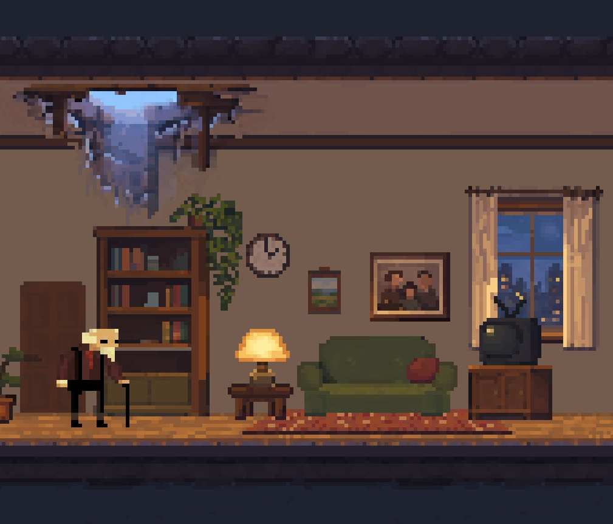
Character Design — Life Stages
Character designs representing Joseph and important characters throughout different stages of his life, from childhood to old age.
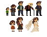
Character Animation
Animation sets created for different stages of Joseph's life, including locomotion, gameplay actions and character death animations.
Young Joseph
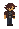
WalkAdult Joseph
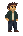
WalkElderly Joseph
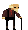
Walk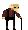
Breathing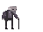
DeathSpectres — Enemy Animation
Animated spectral entities created for the game's supernatural environments and encounters.
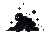
Spectre I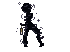
Spectre IIEnvironment Art
Pixel art environments created to represent fragmented memories and different moments from Joseph's life.
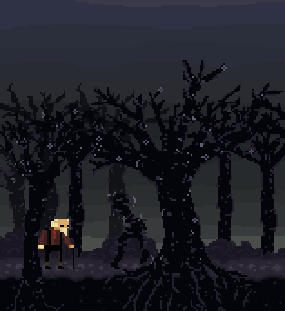
Narrative Scene — Wedding Memory
A memory scene depicting an important moment from Joseph's past, using a minimal environment to keep the focus on the characters and the memory itself.
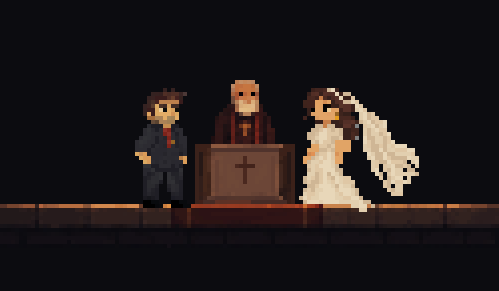
Personal Work & Fan Art
Personal pixel art studies and animations inspired by games, characters and visual storytelling.
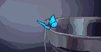
Life is Strange — Butterfly Animation
A fan-made pixel art animation inspired by Life is Strange, created as a study of movement, atmosphere and environmental animation.
About Me
Hi! I'm Mari, a Digital Games student at Cruzeiro do Sul University in Brazil, focused on Pixel Art, 2D Game Art and animation.
I enjoy creating characters, environments and animations for games, with a special interest in visual storytelling and character-driven experiences.
Ecos da Memória was developed during a Game Jam, where I worked on pixel art and visual assets for the game. I'm currently expanding my portfolio through game projects, animation studies and personal work.
Contact
I'm open to opportunities in Pixel Art and 2D Game Art.